Econometrics I
TA Christian Alemán
Session 4: Friday 11, February 2022
Based on Prof.Michael Creel's Lecture Notes And Fumio Ayashi's Book Econometrics section 1.7
Activity 1: "Replicating Nerlove"
Nerlove’s 1963 paper is a classic study of returns to scale in a regulated industry.
Firms Minimize Cost:
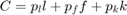
Subject to a Constant Returns to Scale Production Function (Cobb-Douglas)
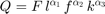
Where 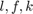 are the inputs, labor, fuel and capital respectively.
Equilibirum prices are respectively 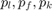.
Recall that we have constant returns to scale if:
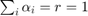
Solving the minization problem we find that the Cost Function is also Cobb-Douglas:
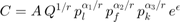
Whats more, the cost function above will be homogeneous of degree 1 (HOD1) if 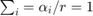
We can rewrite the above cost function as:
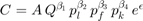
Take the logs
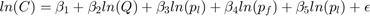
Our Data
Data on Company's:
- COST(C)
- OUTPUT(Q)
- PRICE OFLABOR 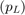
- PRICE OF FUEL 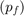
- PRICE OF CAPITAL 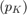.
We are ready to run some tests!
We want to test:
- Constant Returns to Scale (CRS) assumption
- Homogeneity of degree 1
- Understant whether CRS changes with size of the company
Our Tools:
- Restricted estimation:
- Testing: Chow-test
% Housekeeping clc close all clear all % Load the Data load nerlove data = data(:,2:6); data = log(data); n = size(data,1); y = data(:,1); x = data(:,2:5); x = [ones(n,1), x]; k = size(x,2); names = str2mat("constant", "output","labor", "fuel", "capital"); names = [names; names; names; names; names]; % copy 5 times for Chow test % Run OLS [b,~,~,~] = mc_ols(y,x,names, 0, 1);
********************************************************* OLS estimation results Observations 145 R-squared 0.925955 Sigma-squared 0.153943 Results (Ordinary var-cov estimator) estimate st.err. t-stat. p-value 1 -3.527 1.774 -1.987 0.049 2 0.720 0.017 41.244 0.000 3 0.436 0.291 1.499 0.136 4 0.427 0.100 4.249 0.000 5 -0.220 0.339 -0.648 0.518 *********************************************************
Activity 2: Testing
Testing Homogeneity of Degree 1
Recall the linear restriction form:
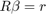
In our case for HOD1 we need 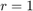 and 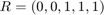
The null hypothesis for qF,Wald,LR test below is:
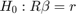
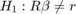
We cannot reject the null (the p-value is above 0.05), meaning that we cannot reject Homogeneity
% First Homogeneity of Degree 1 (HOD1) R = [0, 0, 1, 1, 1]; r = 1; % Imposing and testing HOD1 mc_olsr(y, x, R, r, names); TestStatistics(y, x, R, r);
For some reason the output of this example is comming at the end of the page.
Testing Constant Returns to scale (CRS)
In our case for CRS we need and 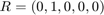
We reject the null (the p-value is below 0.05), meaning that we reject the assumption of constant returns to scale.
% Now Constant Returs to Scale (CRTS) R = [0, 1, 0, 0, 0]; r = 1; % Imposing and testing CRTS mc_olsr(y, x, R, r, names); TestStatistics(y, x, R, r);
Restricted LS estimation results
Observations 145
R-squared 0.790420
Sigma-squared 0.438861
Results (Het. consistent var-cov estimator)
estimate st.err. t-stat. p-value
1 -7.530 2.919 -2.579 0.011
2 1.000 0.000 Inf 0.000
3 0.020 0.376 0.052 0.959
4 0.715 0.159 4.490 0.000
5 0.076 0.576 0.132 0.896
*********************************************************
Value p-value
F 256.262 0.000
Wald 265.414 0.000
LR 150.863 0.000
Score 93.771 0.000
Activity 3: The chow test
We want to understant whether CRS changes with size of the company
Define 5 subsamples of firms, with thefirst group being the 29 firms with the lowest output levels, then the next 29 firms, etc.
To do this define dummy variables:
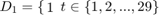 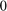 Otherwise
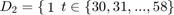 Otherwise
And so forth fro 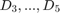
Then the model can be rewritten as:
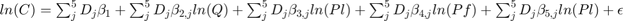
In Matrix form
![$\left[\begin{array}{c}y_{1} \\ y_{2} \\ y_{3} \\ y_{4} \\ y_{5} \end{array}\right]=\left[\begin{array}{ccccc}X_{1}&0&0&0&0 \\ 0&X_{2}&0&0&0 \\ 0&0&X_{3}&0&0 \\ 0&0&0&X_{4}&0 \\ 0&0&0&0&X_{5} \end{array}\right]\left[\begin{array}{c}\beta^{1} \\ \beta^{2} \\ \beta^{3} \\ \beta^{4} \\ \beta^{5} \end{array}\right]\left[\begin{array}{c}\epsilon_{1} \\ \epsilon_{2} \\ \epsilon_{3} \\ \epsilon_{4} \\ \epsilon_{5} \end{array}\right]$](s4_eq03914849164482470231.png)
We define 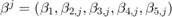
% Create the block diagonal X matrix corresponding to separate coefficients big_x = zeros(n,5*k); %x_A = NaN() x_old = x; for i=1:k startrow = (i-1)*29+1; endrow = i*29; startcol =(i-1)*k + 1; endcol = i*k; big_x(startrow:endrow,startcol:endcol) ... = big_x(startrow:endrow,startcol:endcol)... + x(startrow:endrow,:); % Alternative X % x_A(:,:,i) = x(startrow:endrow,:); end x = big_x;
Visual Inspection
Nerlove model: 5 separate regressions, one per each group of firms
b = mc_ols(y, x, names); output = 1:5; output = output*5+2-5; % Just extract the relevant parameter output = b(output,:); rts = 1 ./ output; % gset term X11 xlabel("Output group"); group = 1:5; figure(1) plot(group, rts,"ko-",'linewidth',1.2,'markerfacecolor','k') ylabel('RTS') legend('RTS')
*********************************************************
OLS estimation results
Observations 145
R-squared 0.960901
Sigma-squared 0.094836
Results (Het. consistent var-cov estimator)
estimate st.err. t-stat. p-value
constant 0.390 4.049 0.096 0.923
output 0.385 0.089 4.315 0.000
labor -0.177 0.894 -0.198 0.844
fuel 0.406 0.255 1.591 0.114
capital -0.650 0.744 -0.873 0.384
constant -0.569 1.937 -0.294 0.769
output 0.655 0.077 8.490 0.000
labor -0.522 0.284 -1.834 0.069
fuel 0.511 0.090 5.669 0.000
capital -0.681 0.375 -1.819 0.071
constant -2.146 1.724 -1.245 0.216
output 0.957 0.135 7.095 0.000
labor -0.335 0.208 -1.610 0.110
fuel 0.409 0.120 3.408 0.001
capital -0.722 0.264 -2.739 0.007
constant -4.934 1.732 -2.849 0.005
output 0.937 0.106 8.865 0.000
labor 0.313 0.238 1.313 0.192
fuel 0.439 0.061 7.206 0.000
capital -0.255 0.293 -0.871 0.386
constant -6.946 1.828 -3.800 0.000
output 1.041 0.064 16.339 0.000
labor 0.642 0.228 2.818 0.006
fuel 0.679 0.097 7.039 0.000
capital -0.239 0.288 -0.830 0.408
*********************************************************
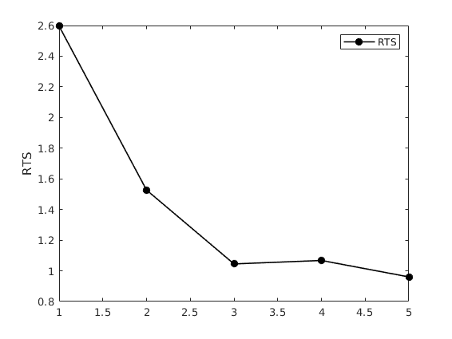 Chow test
When performing the Chow Tets the null to test is that the parameter vectors for the separate groups are all the same, that is:
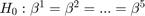
We reject the null, then the estimated coefficients are different for the 5 groups.
R = eye(5);
Z = zeros(5,5);
R = [
R -R Z Z Z;
R Z -R Z Z;
R Z Z -R Z;
R Z Z Z -R
];
r = zeros(20,1);
% Chow test:
mc_olsr(y, x, R, r, names);
TestStatistics(y, x, R, r);
Restricted LS estimation results
Observations 145
R-squared 0.925955
Sigma-squared 0.215520
Results (Het. consistent var-cov estimator)
estimate st.err. t-stat. p-value
constant -3.527 1.689 -2.088 0.039
output 0.720 0.032 22.491 0.000
labor 0.436 0.241 1.808 0.074
fuel 0.427 0.074 5.751 0.000
capital -0.220 0.318 -0.691 0.491
constant -3.527 1.689 -2.088 0.039
output 0.720 0.032 22.491 0.000
labor 0.436 0.241 1.808 0.074
fuel 0.427 0.074 5.751 0.000
capital -0.220 0.318 -0.691 0.491
constant -3.527 1.689 -2.088 0.039
output 0.720 0.032 22.491 0.000
labor 0.436 0.241 1.808 0.074
fuel 0.427 0.074 5.751 0.000
capital -0.220 0.318 -0.691 0.491
constant -3.527 1.689 -2.088 0.039
output 0.720 0.032 22.491 0.000
labor 0.436 0.241 1.808 0.074
fuel 0.427 0.074 5.751 0.000
capital -0.220 0.318 -0.691 0.491
constant -3.527 1.689 -2.088 0.039
output 0.720 0.032 22.491 0.000
labor 0.436 0.241 1.808 0.074
fuel 0.427 0.074 5.751 0.000
capital -0.220 0.318 -0.691 0.491
*********************************************************
Value p-value
F 5.363 0.000
Wald 129.601 0.000
LR 92.595 0.000
Score 68.434 0.000
Pick another reference, results should be the same
Chow test: note that the restricted model gives the same results as the original model
R = eye(5); Z = zeros(5,5); R = [ -R Z Z Z R; Z -R Z R Z; Z Z -R Z R; -R R Z Z Z ]; r = zeros(20,1); mc_olsr(y, x, R, r, names); TestStatistics(y, x, R, r);
Restricted LS estimation results
Observations 145
R-squared 0.925955
Sigma-squared 0.215520
Results (Het. consistent var-cov estimator)
estimate st.err. t-stat. p-value
constant -3.527 1.689 -2.088 0.039
output 0.720 0.032 22.491 0.000
labor 0.436 0.241 1.808 0.074
fuel 0.427 0.074 5.751 0.000
capital -0.220 0.318 -0.691 0.491
constant -3.527 1.689 -2.088 0.039
output 0.720 0.032 22.491 0.000
labor 0.436 0.241 1.808 0.074
fuel 0.427 0.074 5.751 0.000
capital -0.220 0.318 -0.691 0.491
constant -3.527 1.689 -2.088 0.039
output 0.720 0.032 22.491 0.000
labor 0.436 0.241 1.808 0.074
fuel 0.427 0.074 5.751 0.000
capital -0.220 0.318 -0.691 0.491
constant -3.527 1.689 -2.088 0.039
output 0.720 0.032 22.491 0.000
labor 0.436 0.241 1.808 0.074
fuel 0.427 0.074 5.751 0.000
capital -0.220 0.318 -0.691 0.491
constant -3.527 1.689 -2.088 0.039
output 0.720 0.032 22.491 0.000
labor 0.436 0.241 1.808 0.074
fuel 0.427 0.074 5.751 0.000
capital -0.220 0.318 -0.691 0.491
*********************************************************
Value p-value
F 5.363 0.000
Wald 129.601 0.000
LR 92.595 0.000
Score 68.434 0.000
Run the Chow test only the last two groups:
% Trim the data % ng: Choose number of groups : % ng = 2; ni = 5-ng; y = y(29*ni+1:end,1); x = x(29*ni+1:end,5*ni+1:end); R = eye(5); Z = zeros(5,5); R = [R -R]; r = zeros(5*(ng-1),1);
Chow test: note that we still reject the null, but only at the 95% level, not at 90% anymore
mc_olsr(y, x, R, r, names); TestStatistics(y, x, R, r);
Restricted LS estimation results
Observations 58
R-squared 0.961866
Sigma-squared 0.026330
Results (Het. consistent var-cov estimator)
estimate st.err. t-stat. p-value
1 -5.526 1.437 -3.844 0.000
2 0.944 0.037 25.746 0.000
3 0.616 0.180 3.430 0.001
4 0.434 0.056 7.694 0.000
5 -0.190 0.257 -0.740 0.463
6 -5.526 1.437 -3.844 0.000
7 0.944 0.037 25.746 0.000
8 0.616 0.180 3.430 0.001
9 0.434 0.056 7.694 0.000
10 -0.190 0.257 -0.740 0.463
*********************************************************
Value p-value
F 2.487 0.044
Wald 15.028 0.010
LR 13.363 0.020
Score 11.936 0.036
Display Code ends for publication
disp('code ends')
code ends
Functions
function [b, varb, e] = mc_olsr(y, x, R, r, names, silent, regularvc) %{ Copyright (C) 2010 Michael Creel <michael.creel@uab.es> This program is free software; you can redistribute it and/or modify it under the terms of the GNU General Public License as published by the Free Software Foundation Calculates restricted LS estimator (subject to Rb=r) using the Huber-White heteroscedastic consistent variance estimator. inputs: y: dep variable x: matrix of regressors R: matrix R in Rb=r r: vector r in Rb=r names (optional) names of regressors silent (bool) default false. controls screen output regularvc (bool) default false. use normal varcov estimator, instead of het consistent (default) outputs: b: estimated coefficients varb: estimated covariance matrix of coefficients (Huber-White by default, ordinary OLS if requested with switch) e: ols residuals ess: sum of squared residuals %} if nargin < 7 regularvc = false; end if nargin < 6 silent = false; end k = size(x,2); if (nargin < 5) || (size(names,1) ~= k) names = 1:k; names = names'; end [b, sigsq, e] = ols(y, x); xx_inv = inv(x'*x); n = size(x,1); k = size(x,2); q = size(R,1); try P_inv = inv(R*xx_inv*R'); catch der_stop = 1; end b = b - xx_inv*R'*P_inv*(R*b-r); e = y-x*b; ess = e' * e; sigsq = ess/(n - k - q); % Ordinary or het. consistent variance estimate if regularvc==1 varb = xx_inv*sigsq; else varb = HetConsistentVariance(x,e); end A = eye(k) - xx_inv*R'*P_inv*R; %# the matrix relating b and b_r varb = A*varb*A'; seb = sqrt(diag(varb)); t = b./seb; tss = y - mean(y); tss = tss' * tss; rsq = 1 - ess / tss; labels = char('estimate', 'st.err.', 't-stat.', 'p-value'); if silent==0 ('\n*********************************************************\n'); fprintf('Restricted LS estimation results\n'); fprintf('Observations %d\n',n); fprintf('R-squared %f\n',rsq); fprintf('Sigma-squared %f\n',sigsq); p = 2 - 2*tcdf(abs(t), n - k - q); results = [b, seb, t, p]; if regularvc==1 fprintf('\nResults (Ordinary var-cov estimator)\n\n'); else fprintf('\nResults (Het. consistent var-cov estimator)\n\n'); end prettyprint(results, names, labels); fprintf('\n*********************************************************\n'); end end % function varb = HetConsistentVariance(x, e) xx_inv = inv(x'*x); E = e .^2; varb = xx_inv * x'*eemult_mv(x, E) * xx_inv; end %} function [F, W, LR, S] = TestStatistics(y, x, R, r) %{ Copyright (C) 2010 Michael Creel <michael.creel@uab.es> This program is free software; you can redistribute it and/or modify it under the terms of the GNU General Public License as published by the Free Software Foundation This code calculates F, Wald, Score and Likelihood Ratio tests for linear model y=XB+e e~N(0,sig^2*I_n) subject to linear restrictions RB=r The null is H_{0}:RB=r inputs: y: nx1 dependent variable x: nxk regressor matrix R: R above, a qxk matrix r: r above, a qx1 vector output: F: the F statistic W: the Wald statistic S: the score statistic LR: the likelihood ratio statistic %} n = size(x,1); k = size(x,2); q = size(R,1); % OLS [b, ~, ~] = ols(y, x); % The restricted estimator xx_inv = inv(x'*x); P_inv = inv(R*xx_inv*R'); b_r = b - xx_inv*R'*P_inv*(R*b-r); % Sums of squared errors and estimators of sig^2 e = y - x*b; ess = e'*e; e_r = y - x*b_r; ess_r = e_r' * e_r; sigsqhat_ols = ess/(n-k); sigsqhat_mle = ess/(n); sigsqhat_mle_r = ess_r/(n); % F-test F = (ess_r-ess)/q; F = F/sigsqhat_ols; % Wald test (uses unrestricted model's est. of sig^2 W = (R*b-r)'*P_inv*(R*b-r)/sigsqhat_mle; % Score test (uses restricted model's est. of sig^2 P_x = x * xx_inv * x'; S = e_r' * P_x * e_r/(sigsqhat_mle_r); % LR test lnl = -n/2*log(2*pi) - n/2*log(sigsqhat_mle) - e' * e/(2*sigsqhat_mle); lnl_r = -n/2*log(2*pi) - n/2*log(sigsqhat_mle_r) - e_r' * e_r/(2*sigsqhat_mle_r); LR = 2*(lnl-lnl_r); tests = [F;W;LR;S]; WLRS = [W;LR;S]; pvalues = [1 - fcdf(F,q,n-k); 1 - chi2cdf(WLRS,q)]; tests = [tests, pvalues]; TESTS = str2mat("F","Wald","LR","Score"); labels = str2mat("Value","p-value "); prettyprint(tests, TESTS, labels); end function [beta,sigma,r]= ols(y,x) % Simple OLS regression t = size(x,1); beta = inv (x'*x) * x' * y; sigma = (y-x*beta)'*(y-x*beta)/(t-rank(x)); r = y - x*beta; end function prettyprint(mat, rlabels, clabels) %{ This function prints matrices with row and column labels Copyright (C) 2010 Michael Creel <michael.creel@uab.es> This program is free software; you can redistribute it and/or modify it under the terms of the GNU General Public License as published by the Free Software Foundation %} % left pad the column labels a = size(rlabels,2); for i = 1:a fprintf(' '); end fprintf(' '); % print the column labels try clabels = [' ';clabels]; % pad to 8 characters wide catch dert_stop = 1; end clabels = strjust(clabels,'right'); k = size(mat,2); for i = 1:k fprintf('%s ',clabels(i+1,:)); end % now print the row labels and rows fprintf('\n'); k = size(mat,1); for i = 1:k if ischar(rlabels(i,:)) fprintf(rlabels(i,:)); else fprintf('%i', rlabels(i,:)); end fprintf(' %10.3f', mat(i,:)); fprintf('\n'); end end function result = eemult_mv(m,v) if not(ismatrix(m)) error("eemult_mv: first arg must be a matrix"); end if not(isvector(v)) error("eemult_mv: second arg must be a vector"); end [rm, cm] = size(m); [rv, cv] = size(v); if (rm == rv) v = kron(v, ones(1,cm)); result = m .* v; elseif (cm == cv) v = kron(v, ones(rm, 1)); result = m .* v; else error("eemult_mv: dimension of vector must match one of the dimensions of the matrix"); end end function [b, varb, e, ess] = mc_ols(y, x, names, silent, regularvc) %{ Copyright (C) 2010 Michael Creel <michael.creel@uab.es> This program is free software; you can redistribute it and/or modify it under the terms of the GNU General Public License as published by the Free Software Foundation Calculates ordinary LS estimator using the Huber-White heteroscedastic consistent variance estimator. inputs: y: dep variable x: matrix of regressors names (optional) names of regressors silent (bool) default false. controls screen output regularvc (bool) default false. use normal varcov estimator, instead of het consistent (default) outputs: b: estimated coefficients varb: estimated covariance matrix of coefficients (Huber-White by default, ordinary OLS if requested with switch) e: ols residuals ess: sum of squared residuals %} k = size(x,2); if nargin < 5 regularvc = 0; end if nargin < 4 silent = 0; end if (nargin < 3) || (size(names,1) ~= k) names = 1:k; names = names'; end [b, sigsq, e] = ols(y,x); xx_inv = inv(x'*x); n = size(x,1); ess = e' * e; % Ordinary or het. consistent variance estimate if regularvc==1 varb = xx_inv*sigsq; else varb = HetConsistentVariance(x,e); end seb = sqrt(diag(varb)); t = b ./ seb; tss = y - mean(y); tss = tss' * tss; rsq = 1 - ess / tss; labels = char('estimate', 'st.err.', 't-stat.', 'p-value'); if silent==0 fprintf('\n*********************************************************\n'); fprintf('OLS estimation results\n'); fprintf('Observations %d\n',n); fprintf('R-squared %f\n',rsq); fprintf('Sigma-squared %f\n',sigsq); p = 2 - 2*tcdf(abs(t), n - k); results = [b, seb, t, p]; if regularvc fprintf('\nResults (Ordinary var-cov estimator)\n\n'); else fprintf('\nResults (Het. consistent var-cov estimator)\n\n'); end prettyprint(results, names, labels); fprintf('\n*********************************************************\n'); end end
Restricted LS estimation results
Observations 145
R-squared 0.925652
Sigma-squared 0.155686
Results (Het. consistent var-cov estimator)
estimate st.err. t-stat. p-value
1 -4.691 0.804 -5.838 0.000
2 0.721 0.032 22.516 0.000
3 0.593 0.167 3.556 0.001
4 0.414 0.072 5.768 0.000
5 -0.007 0.154 -0.048 0.962
*********************************************************
Value p-value
F 0.574 0.450
Wald 0.594 0.441
LR 0.593 0.441
Score 0.592 0.442